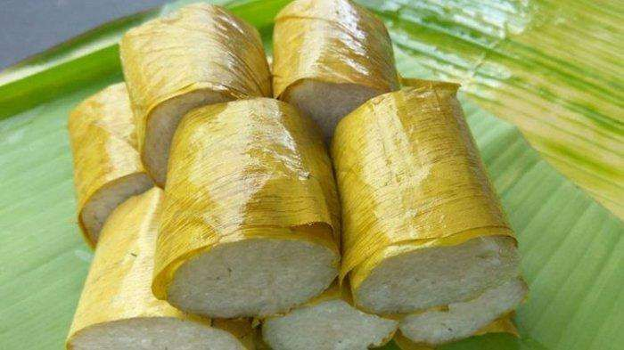

Nasi Jaha / Jahe
Nasi Jaha adalah makanan tradisional dari Manado yang sering disajikan pada acara adat, perayaan, dan kegiatan keluarga besar. Aroma bambu yang terbakar membuat rasanya khas dan sangat wangi.
Bahan-bahan:
- 500 gram beras ketan (atau campuran ketan dan beras biasa)
- 400 ml santan kental
- 2 lembar daun pandan
- 1 batang serai (memarkan)
- 3 siung bawang putih (haluskan)
- 5 siung bawang merah (haluskan)
- 1 sdt garam
- 1/2 sdt gula (opsional)
- Bambu muda (untuk wadah)
- Daun pisang (untuk alas dalam bambu)
Cara Membuat:
-
Rendam beras
Cuci beras/ketan, lalu rendam 1–2 jam agar lebih lembut saat dimasak. -
Siapkan santan berbumbu
Rebus santan bersama daun pandan, serai, bawang halus, garam, dan gula. Aduk perlahan agar tidak pecah. -
Campur beras dan santan
Masukkan beras yang sudah direndam ke dalam santan hangat, aduk rata. -
Masukkan ke bambu
Lapisi bambu dengan daun pisang, lalu isi campuran beras hingga 2/3 bagian. -
Bakar
Bakar bambu di atas api sedang sambil diputar agar matang merata (±1–2 jam). -
Cek kematangan
Jika bambu menghitam dan aroma harum keluar, Nasi Jaha sudah matang.